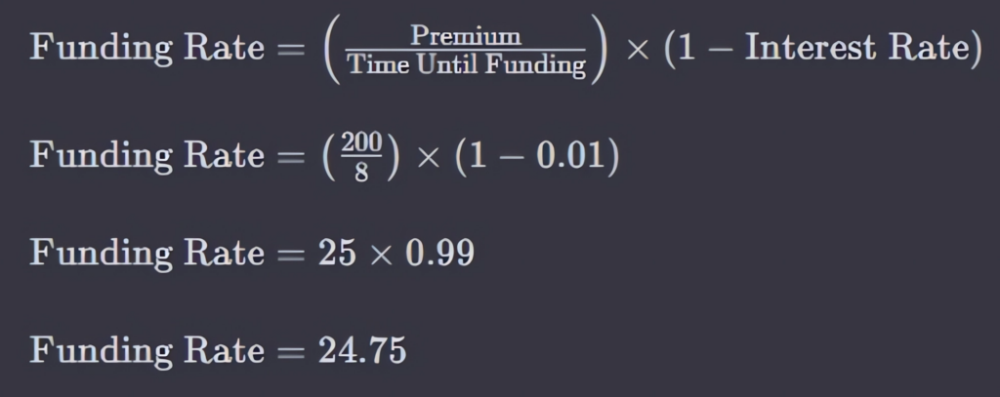
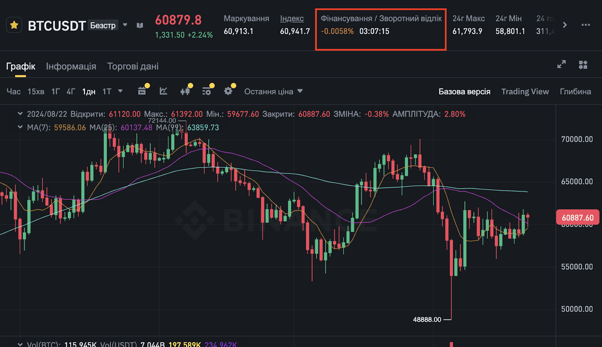

Ставка финансирования или ставка фондирования — это разница между ценой маркировки (mark price) бессрочного контракта и ценой индекса, которая эквивалентна стоимости базового актива.
Под ценой маркировки понимают предполагаемую истинную стоимость контракта — она также известна как текущая рыночная стоимость (market-to-market).
Ставка финансирования обеспечивает выравнивание котировок дериватива с индексом, стимулируя торговлю контрактами вблизи спотовых цен. На ее основе осуществляются периодические выплаты трейдерам на рынке бессрочных фьючерсных контрактов.
В зависимости от стоимости актива ставка финансирования может быть:
Показатель рассчитывается биржами несколько раз в день, система автоматически переводит средства со счета одного трейдера другому. Если ставка финансирования положительная, комиссия взимается с трейдеров, занимающих длинные позиции. В случае отрицательной ставки — средства теряют держатели коротких позиций.
Например, по состоянию на 22 августа 2024 года средняя ставка финансирования на рынке биткоина оценивалась в -1.33%, согласно данным CoinGlass.
Для расчета ставки фондирования необходимо иметь в распоряжении информацию о процентной ставке, премии или дисконте фьючерсного контракта, а также времени пересмотра коэффициента на бирже.
Например, цена фьючерсного контракта на биткоин оценивается в $40 000, в то же время на спотовом рынке котировки цифрового золота находятся на уровне $39 800. Соответственно, дисконт равен $200 (от стоимости фьючерса вычитается базовая цена актива). При этом фандинг автоматически пересчитывается каждые восемь часов, а процентная ставка равняется 1%.
Пользуясь формулой ниже, получаем: (200/8) x (1 – 0.01) = 24.75.
Стоит отметить, что на большинстве бирж ставка финансирования рассчитывается каждые восемь часов, однако время может отличаться в зависимости от платформы. Также некоторые площадки могут корректировать коэффициент в моменты сильной волатильности рынка.
Например, в Bybit предупреждают, что могут округлять показатель, например, с 0,75 до 1.
На Binance ставка финансирования рассчитывается с интервалом в восемь часов, на панели указывается текущий коэффициент и обратный отсчет до следующего обновления показателя.
Ставка финансирования не только обеспечивает паритет цен на фьючерсном рынке, но и является индикатором настроения инвесторов.
Например, в августе 2024 года аналитики CryptoQuant зафиксировали самое низкое с октября 2023 года значение ставки финансирования биткоина на криптобирже Binance. По словам экспертов, на рынке доминировали короткие позиции, что могло свидетельствовать о непродолжительном медвежьем тренде.
Коэффициент является своеобразной гарантией того, что цена бессрочного фьючерсного контракта останется максимально приближенной к спотовой цене базового актива.
Колебания ставки финансирования стимулируют трейдеров принимать участие в торгах. Такой механизм обеспечивает постоянный приток ликвидности на рынок для эффективного функционирования.
Ставка также помогает сохранять баланс сил между трейдерами, предотвращая чрезмерное доминирование длинных или коротких позиций, таким образом предупреждая появление дисбалансов на рынке.
Для проведения успешных сделок трейдеру необходимо постоянно отслеживать ставку фондирования, поскольку иногда пользователю просто невыгодно долго держать свою позицию открытой.
Своевременная и правильная реакция поможет:
Однако для прогнозирования рыночных трендов одного показателя недостаточно, поскольку такой подход не считается репрезентативным. Для того чтобы составить наиболее полную картину о происходящих событиях на рынке и учесть все возможные риски и возможности, необходимо проводить технический и фундаментальный анализ рынка.
Ставка финансирования поддерживает стабильную и эффективную работу рынка бессрочных фьючерсных контрактов. Этот механизм помогает удерживать цены деривативов максимально приближенными к стоимости базовых активов. Он также стимулирует трейдеров открывать новые позиции, привлекая ликвидность, и отображает текущую рыночную ситуацию.
Несмотря на это, ставку фондирования не следует рассматривать как отдельный инструмент. Такой подход может привести пользователя к серьезным ошибкам и потере средств. Коэффициент является одним из множества технических индикаторов, на которые необходимо обращать внимание во время планирования инвестиционной стратегии.
Веерх